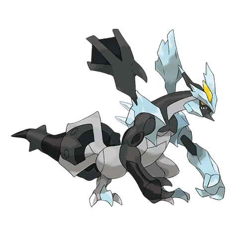

🧭 Quick Navigation
📖 Introduction
Black Kyurem is one of the most powerful forms of Kyurem in the Pokémon series. In Pokémon GO, it appears as a Legendary raid boss that requires a coordinated team of trainers to defeat.
With its Dragon and Ice typing, Black Kyurem has access to strong offensive moves that can deal heavy damage to unprepared raid teams. However, it also has several important weaknesses that experienced trainers can take advantage of.
In this raid guide, we will cover everything you need to know about battling Black Kyurem in Pokémon GO, including its weaknesses, best counters, optimal raid strategy, catch CP ranges, and shiny availability.
Whether you are a beginner trainer or an experienced raider, this guide will help you prepare the best team and defeat Black Kyurem efficiently.
📊 Black Kyurem Stats
| Type | Dragon / Ice |
| Max CP | 5026 |
| Weather Boost | Windy, Snowy |
| Shiny | Yes |
| Base Attack | 310 |
| Base Defence | 183 |
| Base Stamina | 245 |
Because of its very high attack, Black Kyurem can deal heavy damage during raids.
🎯 Catch CP & 100% IV
After defeating Black Kyurem in a raid, you will get a chance to catch it.
CP Range:
- No Weather Boost: 2,533-2,631 CP
- Weather Boost: 3,167-3,289 CP
100% IV:
- 2631 (Normal)
- 3289 (Weather Boosted)
Use:
- Golden Razz Berry
- Curveball Excellent Throws
Keep in mind that weather-boosted Black Kyurem is significantly harder to defeat, so always prepare strong Ice, Dragon, Fairy-type counters.
⚠️ Black Kyurem Weaknesses
Rock and Steel Pokémon are often the best counters because they resist Ice-type attacks.
| Category | Details |
|---|---|
| ❌ Weak to |
 Fighting • Fighting •
 Rock • Rock •
 Steel • Steel •
 Dragon • Dragon •
 Fairy Fairy
|
| ✅ Resists to |
 Water • Water •
 Grass • Grass •
 Electric Electric
|
Notes: Black Kyurem has no double weaknesses, but its massive damage output makes it more challenging than most legendary raid bosses. Its Dragon-type attacks can quickly eliminate glass-cannon counters, so team balance is critical.
🗡️ Best Black Kyurem Counters
The best counters are strong Steel, Fighting, Fairy, and Rock attackers.
⚙️ Steel-Type Counters (High Durability)
Steel-types resist Ice-type moves and deal super-effective damage. They last longer in battle and reduce the need to relobby.
- Bullet Punch
- Meteor Mash or Flash Cannon
- Dialga: (Metal Claw)
- Metagross: (Bullet Punch / Meteor Mash)
Steel typing helps resist some Dragon attacks.
Very bulky and deals excellent Steel-type damage.
🥊 Fighting-Type Counters (Safest Option)
Fighting-type Pokémon are among the safest and most consistent choices. They deal strong super-effective damage and are not weak to Dragon moves.
- Fast Move: Counter
- Charged Move: Aura Sphere or Dynamic Punch
- Mega Fighting Pokémon significantly boost group damage
- Terrakion: (Double Kick / Sacred Sword)
Extremely powerful Fighting-type legendary counter.
🪨 Rock-Type Counters (Strong vs Ice Moves)
Rock-type attackers perform well, especially when Black Kyurem uses Blizzard or other Ice-type charged attacks.
- Smack Down
- Rock Slide or Stone Edge
- Diancie: (Rock Throw / Rock Slide)
One of the best Rock-type raid attackers.
🐉 Dragon-Type Counters (Maximum DPS)
Dragon attackers provide the highest damage output but are risky because they take super-effective damage from Dragon moves. Use them in coordinated groups for fast clears.
- Dialga: (Draco Meteor)
- Palkia: (Dragon Tail / Draco Meteor)
- Latias: (Dragon Breath)
One of the best budget Dragon attackers.
Dragon typing helps resist some Dragon attacks.
One of the highest Dragon-type DPS Pokémon.
🏆 Best Regular Counters
Regular pokemon that amplify the right types give you a powerful edge. Below are top Regular counters with short notes on why they excel.
| Pokémon | 🗡️ Fast Moves | 💥 Charged Moves | 🔄 Elite Moves | 🏆 Best Moves | 🧪 Why This Counter Works |
|---|---|---|---|---|---|
| Zacian | Metal Claw / Air Slash | Play Rough / Close Combat / Giga Impact / Behemoth Blade | None | Metal Claw and Behemoth Blade | Fairy typing hits Black Kyurem’s Dragon weakness super effectively, while Steel coverage helps resist Ice-type attacks for better survivability. |
| Keldeo(Original) | Low Kick / Poison Jab | Close Combat / Sacred Sword / X-Scissor / Aqua Jet / Hydro Pump | None | Low Kick and Sacred Sword | Fighting-type Sacred Sword deals super-effective damage to Ice typing while resisting none of Kyurem’s main threats, making it a balanced DPS option. |
| Origin Dialga | Dragon Breath / Metal Claw | Iron Head / Thunder / Draco Meteor | Roar of Time | Dragon Breath / Metal Claw and Roar of Time | Steel typing resists Ice and Dragon damage, while Dragon or Steel moves deal consistent super-effective damage. |
| Zamazenta | Metal Claw / Ice Fang | Moon Blast / Close Combat / Giga Impact / Behemoth Bash | None | Metal Claw and Close Combat | Strong Fighting-type damage exploits Ice weakness and provides solid bulk for longer field presence. |
| Dusk Mane Necrozma | Shadow Claw / Metal Claw / Psycho Cut | Dark Pulse / Iron Head / Future Sight / Outrage / Sunsteel Strike | None | Shadow Claw / Metal Claw and Sunsteel Strike | Steel typing resists Ice attacks and Sunsteel Strike provides powerful super-effective Steel damage. |
| Terrakion | Double Kick / Smack Down / Zen Headbutt | Close Combat / Earthquake / Rock Slide | Sacred Sword | Smack Down and Rock Slide | Rock and Fighting coverage both hit Ice typing super effectively, making it one of the safest and strongest counters. |
| Origin Palkia | Dragon Breath / Dragon Tail | Hydro Pump / Fire Blast / Aqua Tail / Draco Meteor | None | Dragon Tail and Draco Meteor | High Dragon-type DPS exploits Kyurem’s Dragon weakness, though it must be careful of Dragon-type retaliation. |
| Eternatus | Poison Jab / Dragon Tail | Flamethrower / Dragon Pulse / Sludge Bomb | Dynamax Cannon | Dragon Tail and Dynamax Cannon | Dragon-type attacks deal strong super-effective damage while maintaining decent overall raid DPS. |
| Metagross | Fury Cutter / Bullet Punch / Zen Headbutt | Earthquake / Flash Cannon / Psychic | Shadow Claw / Meteor Mash | Bullet Punch and Meteor Mash | Bullet Punch and Meteor Mash deal super-effective Steel damage while Steel typing resists Ice moves. |
| Keldeo(Resolute) | Low Kick / Poison Jab | Close Combat / Sacred Sword / X-Scissor / Aqua Jet / Hydro Pump | None | Low Kick and Sacred Sword | Same Fighting-type advantage as its Original form, dealing strong Ice-type super-effective damage. |
| Primal Groudon | Mud Shot / Dragon Tail | Earthquake / Fire Blast / Solar Beam | Precipice Blades / Fire Punch | Dragon Tail and Precipice Blades | High base stats and Dragon Tail provide neutral but strong DPS, though it lacks direct type advantage. |
| Lucario | Counter / Bullet Punch | Close Combat / Power-Up Punch / Aura Sphere / Shadow Ball / Flash Cannon / Meteor Mash / Blaze Kick / Thunder Punch | Force Palm | Counter and Close Combat | Counter and Close Combat deal strong super-effective damage to Ice typing while Steel sub-typing resists Ice attacks. |
| Dialga | Metal Claw / Dragon Breath | Iron Head / Thunder / Draco Meteor | None | Metal Claw / Dragon Breath and Draco Meteor | Excellent defensive typing resists Dragon and Ice while delivering consistent Dragon or Steel damage. |
👤 Best Shadow Counters
Shadow pokemon that amplify the right types give you a powerful edge. Below are top Shadow counters with short notes on why they excel.
| Pokémon | 🗡️ Fast Moves | 💥 Charged Moves | 🔄 Elite Moves | 🏆 Best Moves | 🧪 Why This Counter Works |
|---|---|---|---|---|---|
| Shadow Metagross | Fury Cutter / Bullet Punch / Zen Headbutt | Earthquake / Flash Cannon / Psychic | Shadow Claw / Meteor Mash | Bullet Punch and Meteor Mash | Shadow boost increases Steel-type Meteor Mash damage while resisting Ice attacks. |
| Shadow Palkia | Dragon Breath / Dragon Tail | Fire Blast / Hydro Pump / Aqua Tail / Draco Meteor | None | Dragon Tail and Draco Meteor | Shadow bonus amplifies Dragon-type DPS, making it one of the highest damage Dragon attackers. |
| Shadow Garchomp | Mud Shot / Dragon Tail | Earthquake / Sand Tomb / Fire Blast / Outrage / Breaking Swipe | Earth Power | Dragon Tail and Outrage | Shadow boost significantly increases Dragon-type damage output against Kyurem’s Dragon typing. |
| Shadow Blaziken | Counter / Fire Spin / Ember | Focus Blast / Aura Sphere / Brave Bird / Overheat / Blaze Kick | Stone Edge / Blast Burn | Counter / Fire Spin and Overheat | Shadow Fighting-type damage hits Ice weakness hard while delivering extremely high DPS. |
| Shadow Dialga | Metal Claw / Dragon Breath | Iron Head / Thunder / Draco Meteor | None | Metal Claw / Dragon Breath and Draco Meteor | Shadow bonus combined with Steel and Dragon typing provides both strong damage and partial resistances. |
⚡ Best Mega Counters
Mega pokemon that amplify the right types give you a powerful edge. Below are top Mega counters with short notes on why they excel.
| Pokémon | 🗡️ Fast Moves | 💥 Charged Moves | 🔄 Elite Moves | 🏆 Best Moves | 🧪 Why This Counter Works |
|---|---|---|---|---|---|
| Mega Lucario | Counter / Bullet Punch | Close Combat / Power-Up Punch / Aura Sphere / Shadow Ball / Flash Cannon / Meteor Mash / Blaze Kick / Thunder Punch | Force Palm | Counter and Close Combat | Mega boost increases Fighting damage for the entire team while dealing super-effective Ice damage. |
| Mega Diancie | Tackle / Rock Throw | Rock Slide / Power Gem / Moonblast | None | Rock Throw and Moonblast | Rock-type damage hits Ice weakness and Mega boost strengthens Rock attackers in the raid. |
| Mega Rayquaza | Air Slash / Dragon Tail | Aerial Ace / Dragon Ascent / Ancient Power / Outrage | Hurricane / Breaking Swipe | Dragon Tail and Outrage | Extremely high Dragon-type DPS and Mega boost significantly increase team-wide Dragon damage. |
| Mega Latias | Zen Headbutt / Dragon Breath / Charm | Aura Sphere / Thunder / Psychic / Outrage | Mist Ball | Dragon Breath and Outrage | Provides Dragon-type team boost while delivering stable Dragon damage with improved bulk. |
| Mega Latios | Zen Headbutt / Dragon Breath | Aura Sphere / Solar Beam / Psychic / Dragon Claw | Luster Purge | Dragon Breath and Dragon Claw | High offensive Dragon stats plus Mega boost amplify overall Dragon-type raid damage. |
| Mega Blaziken | Counter / Fire Spin / Ember | Focus Blast / Aura Sphere / Brave Bird / Overheat / Blaze Kick | Stone Edge / Blast Burn | Counter / Fire Spin and Overheat | Mega Fighting boost enhances team damage while dealing strong super-effective Ice damage. |
| Mega Gardevoir | Magical Leaf / Charge Beam / Confusion / Charm | Shadow Ball / Psychic / Triple Axel / Dazzling Gleam | Synchronoise | Charm and Dazzling Gleam | Fairy typing hits Dragon weakness and Mega boost increases Fairy-type damage for all teammates. |
| Mega Garchomp | Mud Shot / Dragon Tail | Earthquake / Sand Tomb / Fire Blast / Outrage / Breaking Swipe | Earth Power | Dragon Tail and Outrage | Dragon-type DPS combined with Mega boost significantly increases team Dragon damage output. |
| Mega Tyranitar | Iron Tail / Dragon Breath / Bite | Stone Edge / Fire Blast / Crunch / Brutal Swing | Smack Down | Smack Down and Stone Edge | Rock-type moves exploit Ice weakness and Mega boost strengthens Rock-type attackers. |
| Mega Heracross | Counter / Struggle Bug | Close Combat / Upper Hand / Earthquake / Rock Blast / Megahorn | None | Counter and Close Combat | Strong Fighting-type DPS with Mega boost increases overall Ice-type super-effective damage. |
| Mega Metagross | Fury Cutter / Bullet Punch / Zen Headbutt | Earthquake / Flash Cannon / Psychic | Shadow Claw / Meteor Mash | Bullet Punch and Meteor Mash | Steel typing resists Ice attacks while Mega boost enhances Steel-type damage across the team. |
💊 Revive & Potion Cost
- Average revives used: 8–14
- Average potions used: 10–18
- Dodging significantly reduces resource usage
- Using Mega Pokémon reduces total relobbies
❌ Common Raid Mistakes
- Not bringing a Mega Pokémon for team boosts
- Using weather-boosted Pokémon of the wrong type
- Relobbying too late and losing damage time
- Ignoring dodging during hard-hitting moves
🧩 Best Team Compositions
Fairy + Fighting Team
- Mega Gardevoir (Charm + Dazzling Gleam) - Strong Fairy-type Mega boost.
- Terrakion (Double Kick + Sacred Sword) - Extremely powerful Fighting-type legendary counter.
- Conkeldurr
- Machamp - One of the best budget Fighting attackers.
- Togekiss (Charm + Dazzling Gleam)
- Sylveon
Steel + Rock Team
- Mega Metagross (Bullet Punch + Meteor Mash) - Very bulky and deals excellent Steel-type damage.
- Metagross (Bullet Punch + Meteor Mash) - Very bulky and deals excellent Steel-type damage.
- Rhyperior
- Rampardos
- Dialga - Steel typing helps resist some Dragon attacks
- Terrakion (Double Kick + Sacred Sword) - Extremely powerful Fighting-type legendary counter.
👥 Raid Difficulty & Trainers Needed
- 3 Trainers: Possible with maxed counters
- 4 Trainers: Reliable clear
- 5+ Trainers: Very safe win
Because of Black Kyurem’s higher Attack stat, smaller groups require optimized level 40+ counters.
Small Group (3–4 Trainers)
With strong Steel, Dragon, or Fighting-type counters and at least one Mega Pokémon, Black Kyurem can be defeated by 3 to 4 high-level trainers.
Medium Group (5–7 Trainers)
A group of 5 to 7 trainers with decent counters should have no trouble defeating Black Kyurem.
Large Group (8+ Trainers)
Black Kyurem becomes very easy with a large group, but avoid overfilling the lobby to save raid passes.
🧠 Raid Strategy & Advanced Tips
1. Identify Charged Move Quickly
If Black Kyurem is using Blizzard, switch to Steel or Rock-heavy teams. If it has a Dragon-type charged move, mix in Fighting or Steel Pokémon to avoid frequent fainting.
2. Use Mega Boosts Strategically
Mega Fighting, Mega Steel, or Mega Dragon Pokémon increase team-wide DPS significantly. Coordinate activation timing with your raid group.
3. Balance Damage and Survivability
High-DPS Dragon teams clear faster but may faint frequently. Balanced teams reduce relobby time and improve consistency.
Black Kyurem’s Ice and Dragon typing gives it significant weaknesses to Dragon, Fairy, Steel, and Ice moves. Choosing Pokémon that exploit those weaknesses while resisting Black Kyurem’s powerful charged attacks is key. Dragon-type attackers like Dragonite with Dragon Tail and Draco Meteor or Rayquaza with Dragon Tail and Outrage deal huge damage, while Fairy counters such as Gardevoir and Togekiss provide strong resistance and coverage.
Weather plays a major role in this battle. In Snowy or Partly Cloudy weather, Ice-type moves receive a weather boost that greatly increases damage output from Ice counters like Mamoswine or Glaceon. Cloudy weather can also boost Dragon moves, enhancing Dragon counters even further. Trainers should check the weather before starting the raid to optimize their team composition for the current conditions.
Dodging heavy charged attacks like Dragon Breath or Ice Beam can improve your team’s survival, particularly in smaller raid groups. While it’s not necessary to dodge every attack, timing dodges for high-damage charges gives your counters more time to deal damage, which is especially critical when Agro Kyurem unleashes multiple powerful moves in succession.
For best results, lead with your highest DPS counters that exploit Black Kyurem’s biggest weaknesses. If these Pokémon begin fainting early, rotate in secondary attackers with balanced bulk to maintain consistent pressure. In larger raid groups, coordinating roles — such as assigning Dragon and Fairy counters first — helps reduce wasted time and speeds up the clear dramatically.
Using Mega Evolutions that strengthen your primary counter types, such as Mega Gardevoir or Mega Altaria, can also improve overall performance in the raid. Their type synergies and boosts help amplify damage while providing resilient support for the team.
🌦️ Weather Boost Effects
🌬️ Windy Weather
- Boosts Dragon-type moves (very helpful)
🌨️ Snowy Weather
- Boosts Ice-type moves (excellent condition)
⛅ Partly Cloudy Weather
- Boosts Rock moves
☁️ Cloudy Weather
- Boosts Fighting moves
🌀 Black Kyurem Moveset
🗡️ Fast Moves
- Shadow Claw
- Dragon Tail
💥 Charged Moves
- Stone Edge
- Blizzard
- Iron Head
- Outrage
- Fusion Bolt
- Freeze Shock
Pro tip: Blizzard can heavily damage Dragon or Flying counters.
⚔️ Is Black Kyurem Good in PvP and PvE?
PvE (Raids)
Black Kyurem is one of the strongest Dragon attackers in Pokémon GO. Its high attack stat allows it to deal massive damage in raids.
PvP
While it can be used in Master League, Black Kyurem is generally more useful in raid battles.
✨ Can Black Kyurem Be Shiny in Pokémon GO?
Currently, trainers cannot encounter a shiny version of Black Kyurem in Pokémon GO raids. While the regular Kyurem has a shiny form available in the game, its fused forms such as Black Kyurem and White Kyurem do not have shiny variants released yet.
However, this may change in future events. Niantic often introduces shiny forms of Legendary Pokémon during special raid events or seasonal updates.
Because of this, trainers should keep an eye on future announcements in case Shiny Black Kyurem becomes available in raids.
🚶 Buddy Distance
20 km (per Pokémon GO buddy distance)
⚖️ Shadow & Mega Comparison
🧬 Best Mega Evolutions
Recommended Megas to use against Black Kyurem:
- Lucario, Blaziken, Heracross, Latias, Latios – 🥊 Fighting boost
- Metagross – ⚙️ Steel boost
- Rayquaza, Latios, Latias, Garchomp – 🐉 Dragon boost
- Gardevoir – ✨ Fairy boost
- Diancie, Tyranitar - 🪨 Rock boost
📌 Why Raid Black Kyurem?
Yes, because:
- Very strong Dragon attacker
- Rare Legendary Pokémon
- High attack stat
- Useful for raids
It is a great addition to any trainer’s raid team.
🎁 Raid Rewards
After defeating Black Kyurem in a 5-Star raid in Pokémon GO, trainers receive several valuable rewards. The exact number of items depends on raid performance, damage contribution, gym control, and friendship bonuses with other players.
| Reward | Typical Amount |
|---|---|
| Golden Razz Berry | 3 – 12 |
| Rare Candy | 3 – 9 |
| Revive | 6 – 15 |
| Hyper Potion | 6 – 15 |
| Fast TM | 0 – 2 |
| Charged TM | 0 – 2 |
| Stardust | 1000 |
Premier Balls
After the raid battle ends, trainers receive Premier Balls to catch Black Kyurem. The number of Premier Balls depends on several factors:
- Total damage dealt during the raid
- Gym ownership bonus
- Friendship bonus with other trainers
- Team contribution during the raid
🖼️ Regular vs Shiny Black Kyurem Forms

Black Kyurem
❓ FAQ
Can Black Kyurem be shiny in Pokémon GO?
Yes! Shiny Black Kyurem is available. It features a beautiful icy-blue body with yellow accents.
What are best moveset of Black Kyurem?
Best moveset of Black Kyurem are Dragon Tail (Fast Attack, 14 damage) and Freeze Shock (Charged Attack, 160).
How many trainers are needed to defeat Black Kyurem?
3–5 trainers with strong counters can defeat Black Kyurem efficiently. High-level players may duo it with optimized teams.
Is Black Kyurem a difficult raid boss?
Black Kyurem has high attack and decent bulk. Proper type advantage makes it manageable but still challenging.
What makes Black Kyurem strong?
Its high attack, strong resistances make it a top-tier raid and PvP option.
🏁 Conclusion
Black Kyurem is a high-damage legendary raid boss that rewards preparation and optimized teams. Use Fighting or Steel types for stability, Rock types for Ice-heavy movesets, and Dragons for maximum DPS in coordinated groups. Plan around weather boosts and Mega Evolutions to secure smooth victories.
To beat Black Kyurem efficiently, use high-level Dragon, Fighting, and Fairy Pokémon with optimized movesets. Solo attempts require maxed-out counters, while larger groups benefit from coordinated DPS rotations and shield management. Weather conditions and move selection can greatly influence battle success.
⚡ Quick picks
- Best Mega Team: Blaziken, Lucario
- Best Shadow Team: Metagross
- Best Regular Team: Keldeo, Dusk Mane Necrozma, Zamazenta